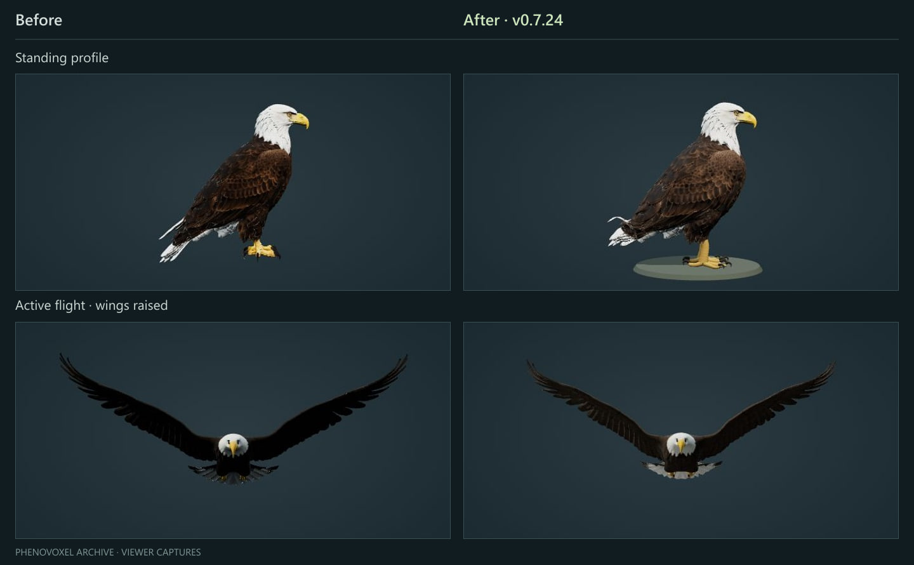
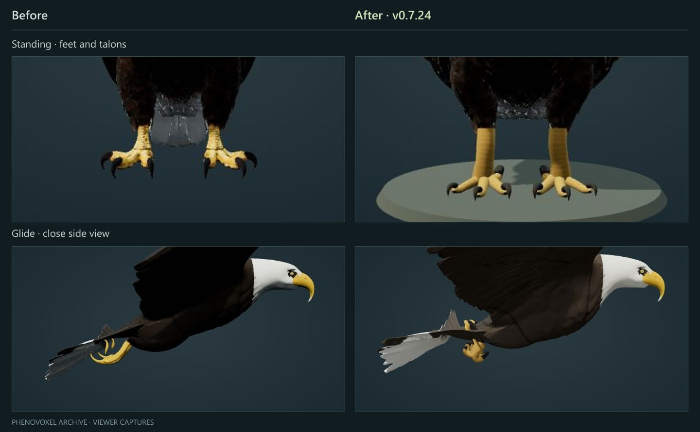

Bald eagle
Haliaeetus leucocephalus · Exterior and flight revision 0.7.24
Open the 3D specimenBefore and after


Evidence for standing and flight
- Standing. Adults have brown body and folded wing feathers, white head and tail, and feather-free lower legs. Both feet contact the flat viewer reference surface. Each foot has three forward toes and an opposing hallux. The model gives the hind and inner claws broader roots and retains pronounced curvature on the other digits. U.S. Fish & Wildlife Service · Fowler, Freedman & Scannella, 2009.
- Active flight. Wild bald eagles switch between flapping and gliding. The viewer shows two brief flapping bouts with the upper arm and wrist moving together and the feet tucked. A 2017 conference abstract reports a mean wingbeat cadence of 2.53 Hz (SE 0.03) from six tracked bald eagles. The model uses this preliminary value during the active phases. Bergen et al., 2022 · Lanzone et al., 2017, conference abstract.
- Glide and shallow bank. The glide displays broad, nearly level wings, separated outer primary tips and tucked feet. The shallow bank illustrates changes in roll and trim. Use the phase buttons to inspect held poses with the same body and feet. Cornell Lab of Ornithology · USGS free-flight study.
The museum measurements provide context for individual and sex differences. Model proportions, flight path and joint angles are authored in display units. Independent validation of anatomy, balance and aerodynamics is pending. Watts & Markham, 2023.
Model credits and files
The standing study revises the folded-wing Grab3D eagle (CC0 1.0). Flight uses a derivative of Pigcraft’s Bald Eagle Flying Bird Model (CC BY 4.0). Both versions use revised geometry and atlas maps, with new scuted feet and separate keratin talons. Standing and flight use distinct source exteriors.
Evidence, geometry counts and GLB checksum · Mesh and texture authoring script · Packed viewer GLB.